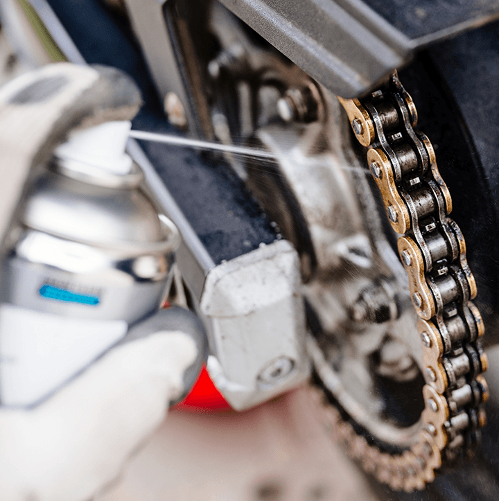

Quick tips

- Check oil level regularly
- Keep between min–max marks
- Use sight glass or dipstick
- Check on level surface
- Use recommended oil
- Avoid overfilling
- Clean chain regularly
- Use proper chain cleaner
- Remove dirt and old lube
- Lubricate evenly after cleaning
- Adjust correct chain tension
- Prevent wear of chain and sprocket
- Check coolant level cold
- Keep between min–max marks
- Use recommended coolant type
- Check brake fluid level
- Replace dark fluid
- Follow service intervals
- Check tire pressure regularly/li>
- Follow recommended values
- Inspect for cracks or damage
- Remove embedded objects
- Check tread depth
- Ensure proper wheel alignment
- Check handlebar tightness
- Ensure smooth left–right movement
- No unusual resistance
- Inspect steering head bearings
- Check for play or looseness
- Ensure stable handling
- Check front and rear brakes
- Ensure firm lever feel
- Inspect pad thickness
- Check disc condition
- Monitor brake fluid level
- Replace fluid as scheduled
Maintenance plan
| Kilometers (≈) | Maintenance Task | What to Do |
|---|---|---|
| 1,000 km | First Maintenance / Break-in | Change engine oil, general check (chain, brakes, fluid levels) |
| 6,400 km | Regular Maintenance | Change engine oil + filter, check brakes and chain, general inspection |
| 12,800 km | Full Service | Change engine oil + oil filter, check/replace air filter, check spark plugs |
| 19,200 km | Repeat Regular Check | Inspect brakes, chain, forks, and timing components |
| 25,600 km | Full Service Again | Change engine oil + filter, fuel/air filter, check/replace spark plugs |
| 32,000 km | Major Maintenance | General inspection, check valves if necessary |
| 38,400 km | Valve Check | Inspect/adjust valves as per manufacturer guidelines |